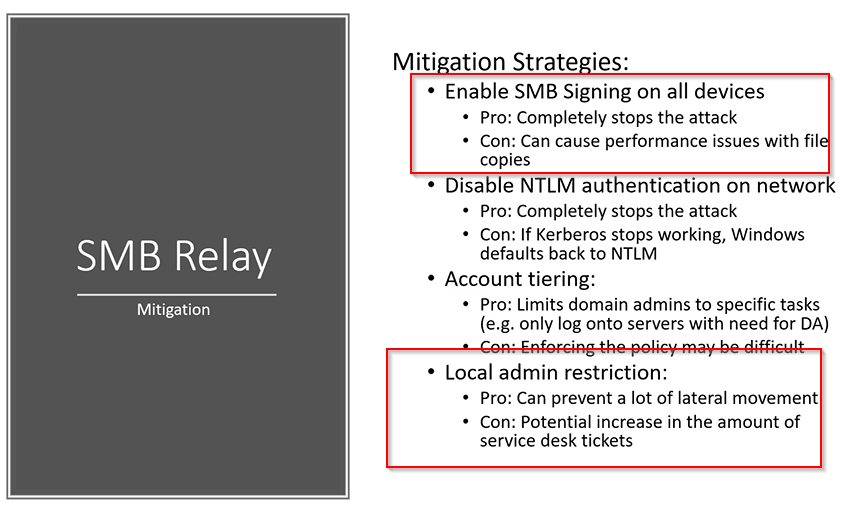

in first defense's con it's reported that it's about a %15 decrease in speed on file transfers when you running with smb signing.
Big thing to talk about is that smb signing should be enabled and local admins should be really restricted here the other two are just best practice sort of things but still don't completely eliminate the attack.
So from here we're going to go ahead and talk about gaining shell access and how we can gain shells with some of the information that we've already gathered right now.
And then we'll move into some IP 6 attacks which are really really fun and onto enumeration.